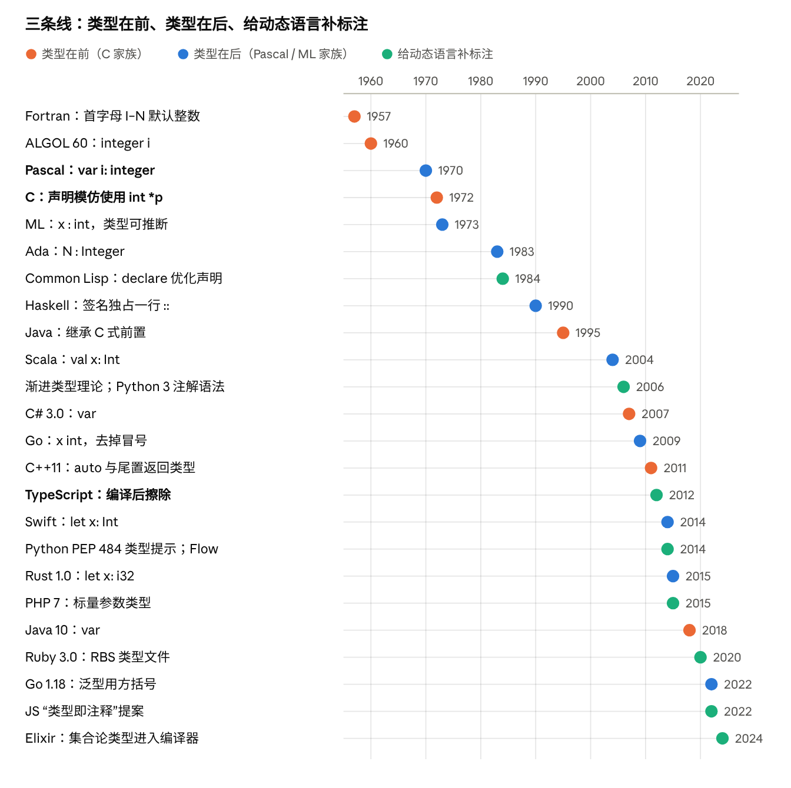

这份调研比较各种编程语言“把类型写在哪里、怎么写”，并梳理这些写法的来历，作为设计新语言的参考。结论先放在前面：
: T，语法不用变。x : T；C（1972）走了“声明模仿使用”的另一条路，影响了之后三十年的工业语言，也留下了解析上的麻烦。declare、Python 的类型提示、TypeScript、Ruby 的 RBS、Elixir 的集合论类型，核心问题都一样：标注写在代码里还是另一个文件里，运行时管不管它。本文的代码示例按各语言的常见写法整理，没有逐一编译；年份和状态类的事实标了来源。
同一件事在各语言里的写法：声明一个整数变量 n，以及一个函数 rep，接收一个字符串和一个整数，返回字符串。
| 语言 | 变量 | 函数签名 | 风格 |
|---|---|---|---|
| Fortran 77 | INTEGER N（不写也行：I–N 开头默认是整数） |
CHARACTER*(*) FUNCTION REP(S, N) |
前置；隐式类型 |
| C | int n = 0; |
char *rep(const char *s, int n); |
前置；声明模仿使用 |
| C++11 | auto n = 0; |
auto rep(std::string s, int n) -> std::string; |
前置，但可以尾置返回类型 |
| Java / Dart | int n = 0;（Java 10 起也可 var） |
String rep(String s, int n) |
前置 |
| C# | var n = 0; |
string Rep(string s, int n) |
前置 |
| Visual Basic | Dim n As Integer |
Function Rep(s As String, n As Integer) As String |
后置，关键字 As |
| Pascal | var n: Integer; |
function Rep(s: string; n: Integer): string; |
后置，冒号 |
| Ada | N : Integer := 0; |
function Rep (S : String; N : Integer) return String; |
后置，冒号；返回用 return |
| Go | var n int = 0 |
func rep(s string, n int) string |
后置，无分隔符 |
| Zig | var n: i32 = 0; |
fn rep(s: []const u8, n: usize) []u8 |
后置；返回类型无箭头 |
| Rust | let n: i32 = 0; |
fn rep(s: &str, n: usize) -> String |
后置，-> 返回 |
| Swift | let n: Int = 0 |
func rep(_ s: String, _ n: Int) -> String |
后置，-> 返回 |
| Kotlin / Scala | val n: Int = 0 |
fun rep(s: String, n: Int): String |
后置，冒号返回 |
| TypeScript | let n: number = 0 |
function rep(s: string, n: number): string |
后置，冒号返回；编译后擦除 |
| Python | n: int = 0 |
def rep(s: str, n: int) -> str: |
后置；运行时不检查 |
| PHP 7+ | — | function rep(string $s, int $n): string |
参数前置、返回后置；运行时检查 |
| Julia | n::Int = 0 |
function rep(s::String, n::Int)::String |
双冒号；参与多重分派 |
| OCaml | let n : int = 0 |
val rep : string -> int -> string（写在 .mli） |
冒号；签名可以放另一个文件 |
| Haskell | n :: Int |
rep :: String -> Int -> String |
签名单独一行，双冒号 |
| Lean / Idris | def n : Nat := 0 |
def rep (s : String) (n : Nat) : String |
冒号；类型与值同一套语言 |
| Common Lisp | (declaim (fixnum *n*)) |
(declaim (ftype (function (string fixnum) string) rep)) |
单独的声明形式；为优化服务 |
| Typed Racket | (: n Integer) |
(: rep (-> String Integer String)) |
签名单独一行 |
| Clojure | — | (defn rep ^String [^String s ^long n] …) |
元数据提示，只为避免反射 |
| Erlang | — | -spec rep(string(), integer()) -> string(). |
签名单独一行，供 Dialyzer 使用 |
| Elixir | — | @spec rep(String.t(), integer()) :: String.t() |
模块属性；编译器另有推断 |
| Ruby（RBS） | — | def rep: (String s, Integer n) -> String（写在 .rbs） |
另一个文件，或写成注释 |
| Ruby（Sorbet） | — | sig { params(s: String, n: Integer).returns(String) } |
普通 Ruby 代码当签名 |
大致可以归成六类：
int n。C、Java、C#、Dart。n: Int。Pascal、ML、Scala、Rust、Swift、Kotlin、TypeScript、Python、Zig、Lean。n int。Go 把 Pascal 式的“x: int”去掉了冒号。n As Integer。BASIC 家族。rep :: String -> Int -> String。Haskell、Elm、Typed Racket、Erlang、Elixir 的 @spec。A$、Perl 的 $ @ %）。“类型标注风格”可以拆成八个独立的选择。设计新语言时，逐项回答即可。
| 维度 | 常见选项 | 代表 |
|---|---|---|
| 1. 位置 | 类型在前 int n / 类型在后 n: Int / 单独一行 / 另一个文件 |
C、Java / Rust、TS / Haskell / OCaml .mli、.d.ts、.rbs |
| 2. 分隔符 | 无 / : / :: / 关键字 As |
Go / Pascal、ML / Haskell、Julia / BASIC |
| 3. 返回类型 | 前置 / : T / -> T / 直接跟在参数后 / return T |
C / Kotlin、TS / Rust、Swift、Python / Go、Zig / Ada |
| 4. 泛型写法 | List<T> / List[T] / List T（前缀应用）/ T list（后缀应用） |
C++、Java、Rust / Scala、Go、Python / Haskell / OCaml |
| 5. 复合类型 | 指针、数组、可空写在哪一侧：int *p、[3]int、int[] a、T? |
C / Go / Java / Kotlin、Swift、C# |
| 6. 省略程度 | 必须写 / 局部推断（变量可省，函数边界要写）/ 全局推断（几乎都可省） | 早期 Java / Rust、Go、Kotlin、Swift / ML、Haskell |
| 7. 写在哪里 | 代码里 / 注释里 / 单独的接口文件 | 多数 / JSDoc、rbs-inline / .mli、.d.ts、.pyi、.rbs |
| 8. 运行时含义 | 静态检查后擦除 / 运行时也检查 / 参与分派 / 只是优化提示 / 完全不管 | TS、Python、大部分静态语言 / PHP、Typed Racket 边界 / Julia / Common Lisp、Clojure / Python 解释器本身 |
几个维度之间有联动：
: T”；类型在前，推断就要另造一个占位关键字，于是有了 C++ 的 auto、C# 和 Java 的 var。: 是列表的“构造”运算符，所以类型标注只好用 ::；ML 家族正好相反，列表构造是 ::，类型标注是 :。Python 的冒号本来只用在代码块开头和字典里。< 同时是小于号，a < b > (c) 既可以是比较，也可以是泛型调用，这是 Go 最终选了方括号、Rust 引入 ::<>（“涊轮鱼”语法）的原因，详见后文“语法与解析的代价”。下图把三条历史线索放在一起，后面三节分别展开。

Fortran：类型由名字决定。 1957 年的 Fortran 里，不声明的变量按首字母定类型：I 到 N 开头是整数，其他是浮点数，沿用了数学里用 i、j、k、n 表示下标的习惯。需要时可以写 INTEGER X 覆盖。拼错变量名会静默地创建一个新变量，所以后来广泛推荐 IMPLICIT NONE（Fortran 90 正式标准化）。“名字里带类型”的思路后来也出现在 BASIC 的 A$、Perl 的 $ @ % 和匈牙利命名法里。
ALGOL：类型写在前面。 ALGOL 60 用 integer i; real array a[1:10] 这样的前置声明，影响了后来的 CPL、BCPL 和 C。ALGOL 68 又提出了一套由基本类型组合成数组、指针、函数的类型结构。
C：声明模仿使用。 C 的前身 B 和 BCPL 是无类型的，只有“机器字”一种数据。Ritchie 在《The Development of the C Language》里说，C 的类型组合方式“很大程度受惠于 ALGOL 68”，而声明语法的原则是“变量的声明长得像它在表达式里的用法”：int *p 的意思是“*p 是一个 int”，int a[3] 的意思是“a[i] 是一个 int”。这个原则很统一，但代价是声明要“由内向外”读。函数指针 int (*fp)(int, int) 已经不好读，再返回一个函数指针就更难，于是有了专门翻译声明的工具 cdecl。Ritchie 引用 Sethi 的意见承认，如果解引用 * 当初是后缀运算符，嵌套声明会简单得多，但已经太晚了；他仍认为这套做法“依然说得通”。另一个常见的坑：int* x, y; 里只有 x 是指针。
C++、Java、C#：继承并打补丁。 C++ 和 Java 继承了前置风格；Java 把数组的方括号移到了类型这边（int[] a），算是离开“声明模仿使用”的一步。类型推断出现后，前置风格只好用占位词补上：C# 3.0（2007）的 var、C++11（2011）的 auto、Java 10（2018）的 var。C++11 还引入了尾置返回类型 auto f(T x) -> R，主要是为了让返回类型能引用参数（配合 decltype），客观上也让 C++ 向“类型在后”靠拢了一点。
这条线的经验是：前置风格对简单类型很紧凑，但对复合类型、类型推断和解析都不友好，后来的版本一直在打补丁。
Pascal 家族。 Wirth 的 Pascal（1970）写 var i: integer，函数写 function f(x: real): real。这个写法被 Modula-2、Oberon、Ada（1983）和 Delphi 继承。它的好处是从左到右读：“i 是一个整数”，复合类型也写成一个独立的短语，比如 array[1..10] of integer、^Node。Go 的声明写法就是从这里来的，Rob Pike 在 2010 年的博客《Go's Declaration Syntax》里解释：名字在前、类型在后，函数类型就能从左到右读下来，如 f func(func(int, int) int, int) int；并把通常的冒号也省了。
ML 家族：标注变成可选。 Milner 的 ML（1970 年代，为 LCF 定理证明器设计）引入了 Hindley–Milner 类型推断，绝大多数类型都可以不写。于是“类型标注”从声明的一部分，变成了一个独立的、可以加在任何表达式上的小语法 (e : t)，叫类型归属（ascription）。后置加冒号在这里最自然：写不写都不影响其他语法。ML 家族还把类型构造写成后缀：int list、string option。OCaml 另有 .mli 接口文件，把签名和实现分开。
Haskell：签名独占一行。 Haskell（1990）把函数的类型写成单独的一行 f :: Int -> Int，紧挨着定义。参数名只出现在定义里，类型只出现在签名里，两者互不干扰，这很适合柯里化和模式匹配的多子句定义。《A History of Haskell》提到，用 : 表示列表构造、用 :: 表示类型签名“当时争议很大”，而且 ML 正好相反；Haskell 的列表构造继承自 Miranda 等前辈。Elm、PureScript、Idris（用单冒号）、Typed Racket、Erlang 的 -spec 都采用了“签名单独一行”的形式。
现代收敛。 2000 年以后的新语言几乎一边倒：
| 语言 | 年份 | 写法 | 来源与特点 |
|---|---|---|---|
| ActionScript 3 / ECMAScript 4 草案 | 2000 年代 | var x:int |
给 JavaScript 加类型的第一次尝试；TypeScript 采用了相同的写法 |
| Scala | 2004 | val x: Int、def f(x: Int): Int |
结合 ML 的推断与 Java 生态 |
| Go | 2009 | var x int、func f(x int) int |
Pascal 风格去掉冒号 |
| TypeScript | 2012 | let x: number |
JS 的超集，标注在编译后擦除 |
| Swift | 2014 | let x: Int、func f(_ x: Int) -> Int |
-> 返回，另有参数标签 |
| Rust | 2015（1.0） | let x: i32、fn f(x: i32) -> i32 |
函数边界必须写，函数内部局部推断 |
| Kotlin | 2016（1.0） | val x: Int、fun f(x: Int): Int |
为取代 Java 而设计，却没有沿用 Java 的前置 |
| Python 3 | 2006 起 | def f(x: int) -> int、x: int = 0 |
函数注解（PEP 3107）、变量注解（PEP 526） |
为什么收敛到这里，主要有四个原因：
: T，let x = 1 和 let x: i32 = 1 是同一个语法；前置写法就得另加 auto 或 var。let / val / fn，解析器就知道接下来是声明，不用像 C 那样先判断一个名字是不是类型。: T 加在后面不会打乱原有的 x = 1 和 def f(x)。动态语言加类型时，约束最多：不能破坏已有代码，不能拖慢运行时，还要允许只给一部分代码加类型。各家给出的答案可以按“标注的含义”分成四类。
一、给编译器的优化提示。 Common Lisp（CLtL，1984）用 (declare (fixnum x)) 和 (the fixnum e) 告诉编译器可以生成更快的代码，是否检查由实现和优化级别决定。Clojure 的 ^String 只用来避免 JVM 反射调用。这类标注通常是单独的声明形式或元数据，而不是语法的一部分。
二、给外部检查器，运行时忽略。
? 或 any/Any）把静态和动态代码接起来，是后面几乎所有方案的理论基础。def f[T](x: T) 的泛型语法。解释器至今不检查这些标注。先有语法、后有语义、再由社区检查器竞争，是一种很少见的做法。let x: string 这样的标注，把它们当注释，以便 TypeScript 代码不经编译就能运行。sig { params(name: String).returns(String) }。Shopify 2025 年的文章提到，开发者觉得 sig 太啰嗦，调查里近 75% 的人希望更易读的语法，于是 Sorbet 开始支持写在注释里的 RBS：#: (String) -> String。Ruby 就这样在“另一个文件”“代码里的 DSL”“注释”三种位置之间走了一圈。-spec 属性供 Dialyzer 做“成功类型”分析，只报告一定会出错的地方。三、运行时也生效。 PHP 7（2015）的参数与返回类型在运行时检查，可以用 declare(strict_types=1) 关掉自动转换；Typed Racket（2008 年前后）在类型化代码和未类型化代码的边界插入契约检查。这样更安全，但代价是运行时开销，而且标注必须留在代码里。
四、参与语义。 Julia 的 x::Int 既是断言，又是多重分派的依据：同名函数按参数类型选择实现。标注不是为了安全，而是为了表达“哪个方法管哪些类型”；性能主要靠对具体类型的编译，而不是靠标注。
完全不写的变体。 Elixir 走了另一条路：先在不引入任何标注的前提下，用集合论类型对已有程序做推断和渐进检查。2026 年 6 月的 Elixir 1.20 宣布完成了这一阶段，用户写的类型签名还在后面的计划里。先推断、后标注，是和 Python 相反的顺序。
小结。 在动态语言里，几乎所有新方案都选了后置 : T（Python、TypeScript、Flow、Luau、JS 提案），因为它可以插在已有语法里而不改变其他东西；真正的分歧在于“写在哪里”和“运行时管不管”。
标注风格最硬的代价不在审美，而在解析器和工具。下面是几个有名的坑。
C 的“这是不是类型”问题。 在 C 里，T * x; 既可能是“声明一个指向 T 的指针 x”，也可能是“T 乘以 x”，取决于 T 是不是用 typedef 定义的类型名。(T)(x) 也一样，可能是强制转换，可能是函数调用。所以 C 编译器的词法分析需要查符号表，俗称“lexer hack”。C++ 还有“最令人烦恼的解析”：Foo bar(Baz()); 被解析成一个函数声明，而不是用临时对象初始化变量。根源都是：声明没有引导关键字，只能靠“开头是不是类型”来判断。
泛型尖括号和小于号。 表达式里的 < 很难判断是比较还是泛型参数：
a, b = w < x, y > (z) 说明，它既可以是两个比较，也可以是一次泛型调用。由于“不需要类型信息就能解析”是 Go 的关键设计决定，Go 1.18（2022）的泛型最终用了方括号：func Map[T, U any](xs []T, f func(T) U) []U。parse::<i32>()，即“涊轮鱼”。Rust 的测试集里有一个叫“涊轮鱼堡垒”的用例，用 (the<guardian, stands>(resolute)) 说明去掉 :: 会产生歧义。template 和 typename 关键字帮解析器消歧；>> 直到 C++11 才允许写成 vector<vector<int>>。<T> 和 JSX 标签冲突，所以类型断言改用 x as T，泛型箭头函数有时要写成 <T,>。[] 表示泛型；Haskell、ML 用空格表示类型应用（Maybe Int、int option），完全绕开了括号。冒号和其他语法的冲突。 Haskell 把 : 留给了列表，类型只好用 ::；C++ 的 :: 是作用域运算符，Julia 的 :: 是类型断言；Python 的冒号本来表示代码块开始，所以 lambda 至今不能写参数标注。设计早期就要想好“冒号归谁”。
标注求值的时机。 如果标注是普通表达式（Python），就会碰到“引用还没定义的类”的问题，只好写成字符串 "Node"。Python 为此折腾了多年，直到 3.14 采用 PEP 649：标注在定义时不再求值，只在被读取时才求值，前向引用不用再加引号。
可读性与工具。
按上面的八个维度，给出一份决策清单。这是根据各语言的经验整理的倾向，不是唯一答案。
| 问题 | 默认建议 | 理由 | 例外 |
|---|---|---|---|
| 类型在前还是在后？ | 在后 | 与推断自然结合；名字对齐；解析不需要符号表 | 要求和 C 家族紧密互通时 |
| 声明有没有引导关键字？ | 有：let / var / fn |
解析器第一个词就知道是声明；避免 C 的 lexer hack | — |
| 分隔符用什么？ | : |
最广泛的共识，对迁移过来的程序员最友好 | 冒号已被占用时用 ::；想极简可以学 Go 不写 |
| 返回类型怎么写？ | -> T 或 : T，保持与函数类型写法一致 |
函数类型 (A, B) -> C 和签名长得一样，少一套规则 |
— |
| 泛型用什么括号？ | [T] 或空格应用 |
避开小于号歧义，不需要涊轮鱼 | 数组下标已用 [] 时，要想清楚怎么区分 |
| 复合类型修饰符放哪边？ | 全部前置，从左到右读：?T、[]T、*T，或全部后置 |
避免 C 那样“由内向外”读 | — |
| 哪里必须写类型？ | 模块导出的函数边界必须写，局部变量可省 | Rust、Go、Swift 的共识：签名即文档，报错也更局部 | 脚本语言可以全部可省 |
| 类型写在代码里还是别处？ | 代码里，另外允许生成接口文件 | 单独文件容易和实现脱节；Ruby 社区的经验是最终又回到代码旁边 | 给已有动态语言加类型时，另写文件是平滑过渡手段 |
| 运行时管不管？ | 静态检查，在动态边界处插入检查 | 只擦除会让类型“说谎”，全检查太慢 | 类型参与分派时（Julia），必须留在运行时 |
| 标注是表达式还是独立语言？ | 独立的类型语法，延迟求值 | 避开 Python 的前向引用问题 | 依赖类型语言（Lean、Idris）类型就是表达式 |
一个最小的参考方案可以是：
let n = 0 // 推断
let m: Int = 0 // 归属，可选
fn rep(s: String, n: Int) -> String
fn map[T, U](xs: List[T], f: (T) -> U) -> List[U]
let name: ?String = none // 修饰符前置，从左到右读
如果设计的是 Lisp 风格或结构化编辑的语言，经验另有不同：类型通常以单独的声明形式或元数据出现（Typed Racket 的 (: f (-> A B))、Clojure 的 ^T、Common Lisp 的 declare），不存在解析歧义，取舍主要在于“签名单独一行”还是“贴在参数上”，以及编辑器能否把类型显示在名字旁边。
: 与 :: 的争议）未逐篇核对、依据常见资料整理的条目：Pascal、ML、Ada、Common Lisp、ActionScript 3 的年份与写法；Siek 与 Taha 的渐进类型（2006）；Python 各 PEP 的年份；PHP 7、Typed Racket、Julia、Luau 的类型语义；C++ 的 most vexing parse 与 >>；TypeScript 在 .tsx 里的泛型写法。各语言代码示例未逐一编译。
Markdown 原文与视频稿件：sources/type-annotations。返回目录